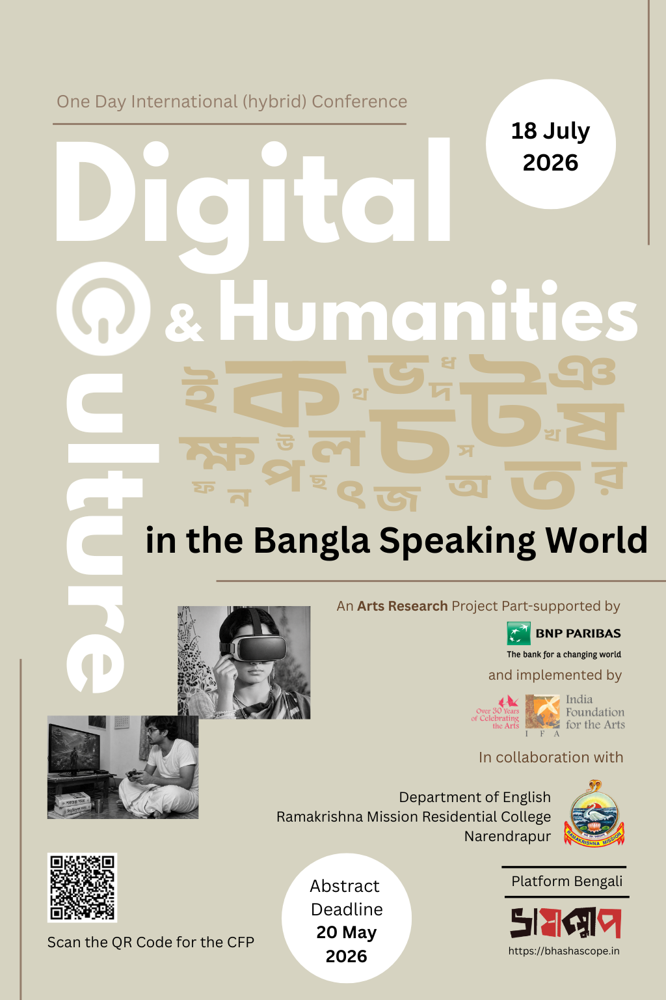

Digital Humanities and Digital Culture
in the Bangla-Speaking World
বাংলা ভাষাভাষী বিশ্বে ডিজিটাল হিউম্যানিটিজ
এবং ডিজিটাল সংস্কৃতি
A One-Day Academic Conference একদিনের আন্তর্জাতিক আলোচনাচক্র
In association with Ramakrishna Mission Residential College, Narendrapur, part-supported by BNP Paribas India and Monotype, and implemented by India Foundation for the Arts রামকৃষ্ণ মিশন রেসিডেন্শিয়াল কলেজ (স্বশাসিত), নরেন্দ্রপুর-এর সহযোগিতায়, বিএনপি পারিবা ইন্ডিয়া ও মনোটাইপ-এর আংশিক সহায়তায়, এবং ইন্ডিয়া ফাউন্ডেশন ফর দ্য আর্টস-এর বাস্তবায়নে


About the Conference সম্মেলন সম্পর্কে
Platform Bengali: Digital Humanities and Digital Culture in the Bangla Speaking World is a one-day hybrid academic conference that seeks to bring together scholars from literary and cultural studies, linguistics, media studies, and the Digital Humanities to examine how digital technologies are reshaping the Bengali language, its cultural production, and the institutions that sustain it. প্ল্যাটফর্ম বাংলা: বাংলা ভাষাভাষী বিশ্বে ডিজিটাল হিউম্যানিটিজ এবং ডিজিটাল সংস্কৃতি একটি একদিনের হাইব্রিড আলোচনাচক্র, যেখানে সাহিত্য ও সাংস্কৃতিক অধ্যয়ন, ভাষাবিজ্ঞান, মিডিয়া স্টাডিজ এবং ডিজিটাল হিউম্যানিটিজের গবেষকদের একত্রিত করা হবে — ডিজিটাল প্রযুক্তি কীভাবে বাংলা ভাষা, তার সাংস্কৃতিক উৎপাদন এবং তাকে ধারণকারী প্রতিষ্ঠানগুলিকে পুনর্গঠিত করছে, তা পর্যালোচনা করতে।
Spoken by over 270 million people across national borders, diaspora networks, and digital platforms, Bengali is undergoing a transformation that is at once linguistic, aesthetic, and institutional. The rise of social media, streaming platforms, YouTube content creation, machine translation, and AI-driven language tools has generated new registers, audiences, and modes of cultural participation that existing disciplinary frameworks struggle to account for. জাতীয় সীমানা, প্রবাসী নেটওয়ার্ক এবং ডিজিটাল প্ল্যাটফর্মে ২৭ কোটিরও বেশি মানুষের মুখের ভাষা বাংলা আজ একটি রূপান্তরের মধ্য দিয়ে যাচ্ছে — যা একই সঙ্গে ভাষাগত, নান্দনিক এবং প্রাতিষ্ঠানিক। সামাজিক মাধ্যম, স্ট্রিমিং প্ল্যাটফর্ম, ইউটিউব কনটেন্ট নির্মাণ, মেশিন ট্রান্সলেশন এবং এআই-চালিত ভাষা সরঞ্জামের উত্থান নতুন রেজিস্টার, দর্শক এবং সাংস্কৃতিক অংশগ্রহণের ধরন তৈরি করেছে, যা বিদ্যমান শাস্ত্রীয় কাঠামো দিয়ে ব্যাখ্যা করা কঠিন।
Situated at the intersection of Digital Humanities and Digital Culture studies, the conference introduces conceptual vocabularies, including "platform vernaculars" and "vernacular remediation," to make sense of rapidly evolving, multimodal, and often ephemeral digital objects in Bengali. ডিজিটাল হিউম্যানিটিজ ও ডিজিটাল কালচার স্টাডিজের সংযোগস্থলে অবস্থিত এই সম্মেলন "প্ল্যাটফর্ম ভার্নাকুলার" এবং "ভার্নাকুলার রেমিডিয়েশন"-এর মতো ধারণাগত পরিভাষা উপস্থাপন করে — বাংলার দ্রুত বিকশিত, বহুমাধ্যমিক এবং প্রায়শই ক্ষণস্থায়ী ডিজিটাল বস্তুগুলিকে বোঝার জন্য।
Themes and Topics বিষয় ও প্রসঙ্গ
We invite contributions that engage with the following four thematic clusters: আমরা নিম্নলিখিত চারটি বিষয়-গুচ্ছের অন্তর্গত প্রবন্ধ আহ্বান করছি:
- Emerging trends in digital syntax, orthography, and neologisms. ডিজিটাল বাক্যগঠন, বানানরীতি ও নতুন শব্দের উদীয়মান ধারা।
- Code-switching, transliteration, and Banglish on written Bengali. লিখিত বাংলায় কোড-সুইচিং, লিপ্যন্তর এবং বাংলিশ।
- Pedagogy in the age of AI, machine translation, and learning tools. কৃত্রিম বুদ্ধিমত্তা, মেশিন ট্রান্সলেশন ও শিক্ষণ সরঞ্জামের যুগে শিক্ষাপদ্ধতি।
- Computational and corpus-based approaches to studying language change. ভাষা পরিবর্তন অধ্যয়নে কম্পিউটেশনাল ও কর্পাস-ভিত্তিক পদ্ধতি।
- Evolution of blogs, literary portals, and web magazines. ব্লগ, সাহিত্যিক পোর্টাল ও ওয়েব পত্রিকার বিবর্তন।
- Register formation on Facebook, Instagram, and X/Twitter. ফেসবুক, ইনস্টাগ্রাম ও এক্স/টুইটারে রেজিস্টার গঠন।
- Memes as vernacular archives: humour, subversion, and remix culture. দেশীয় আর্কাইভ হিসেবে মিম: হাস্যরস, বিদ্রোহ ও রিমিক্স সংস্কৃতি।
- Linguistic innovation among YouTube content creators. ইউটিউব কনটেন্ট নির্মাতাদের মধ্যে ভাষাগত উদ্ভাবন।
- New visual regimes in OTT series, vertical films, and micro-dramas. ওটিটি সিরিজ, ভার্টিকাল ফিল্ম ও মাইক্রো-নাটকে নতুন দৃশ্যমান রীতি।
- Audio storytelling: podcasts, audio dramas, and radio afterlives. শ্রাব্য আখ্যান: পডকাস্ট, অডিও নাটক ও বেতারের উত্তরজীবন।
- Literary culture: digital book fairs and internet microcelebrities. সাহিত্যিক সংস্কৃতি: ডিজিটাল বইমেলা ও ইন্টারনেট মাইক্রোসেলিব্রিটি।
- DH tools, archives, and projects (e.g., Bichitra, Shabdakalpa). ডিএইচ সরঞ্জাম, আর্কাইভ ও প্রকল্প (যেমন, বিচিত্রা, শব্দকল্প)।
- Informal digital archives, piracy networks, and volunteered labour. অনানুষ্ঠানিক ডিজিটাল আর্কাইভ, পাইরেসি নেটওয়ার্ক ও স্বেচ্ছা-শ্রম।
- Transnational Bengali: migration, diaspora, and borderless practices. আন্তর্জাতিক বাংলা: অভিবাসন, প্রবাসী সম্প্রদায় ও সীমানাহীন চর্চা।
- Transformation of cultural marketing, trailers, and PR registers. সাংস্কৃতিক বিপণন, ট্রেলার ও পিআর রেজিস্টারের রূপান্তর।
- Language policy, standardisation, and documenting vernacular shifts. ভাষা-নীতি, মানকরণ এবং দেশীয় পরিবর্তনের নথিভুক্তি।
- Politics of platform governance and algorithmic mediation. প্ল্যাটফর্ম পরিচালন ও অ্যালগরিদমিক মধ্যস্থতার রাজনীতি।
Indicative Timeline সম্ভাব্য সময়সূচি
Keynote Speaker মূল বক্তা
Conference Programme · 18 July 2026 সম্মেলনের কর্মসূচি · ১৮ জুলাই ২০২৬
Accepted Abstracts · 36 Papers Across 8 Parallel Sessions গৃহীত সারসংক্ষেপ · ৮টি সমান্তরাল অধিবেশনে 36টি প্রবন্ধ
The following papers were accepted following peer review. Tap any session to expand it, then tap a paper title to read its full abstract and author biography. পিয়ার-রিভিউয়ের পর নিম্নলিখিত প্রবন্ধগুলি গৃহীত হয়েছে। যেকোনো অধিবেশনে ট্যাপ করে তা খুলুন, তারপর প্রবন্ধের শিরোনামে ট্যাপ করে সম্পূর্ণ সারসংক্ষেপ ও লেখক পরিচিতি পড়ুন।
Kinship terminology has traditionally functioned as a stable linguistic system tied to biological relations, social hierarchy, and cultural identity. In Bengali, terms such as baba, bapi, abba, abbu, papa, dad and dady may all refer to the same familial figure: ‘father’, yet each term carries distinct emotional, regional, religious, generational, social and cognitive associations. In contemporary digital culture, however, these terms no longer operate merely as indicators of kinship. Rather, they increasingly function as performative markers through which speakers negotiate identity, intimacy, modernity, and social self-presentation across digital platforms.
This paper examines how Bengali kinship terminology is being reconfigured within digital spaces (e.g., WhatsApp, Facebook, Instagram, and YouTube), where everyday language practices intersect with visibility, audience awareness, and identity construction. The study focuses on two interconnected phenomena. The first is the multiplicity of naming within a single relationship. Although many Bengali speakers continue to address parents through intimate mother-tongue forms such as baba or abba in spoken interaction, digital practices often reveal a different linguistic pattern. Mobile contact names, Facebook captions, birthday posts, comments, and public expressions frequently employ globally recognizable or socially stylized alternatives such as dad, papa, or pops. This creates a distinction between ‘lived language’ and ‘displayed language’: one rooted in emotional intimacy and local linguistic practice, the other shaped by digital spectatorship and performative identity. These lexical choices are therefore not random substitutions but socially meaningful acts through which speakers negotiate aspiration, sophistication, class positioning, and cultural belonging.
The paper further explores the shifting movement of kinship terms beyond their traditional familial boundaries. Terms such as bhai, dada, and didi, historically associated with blood relations and age hierarchy, are now widely used among friends, strangers, online communities, and social media comment cultures. Simultaneously, socially external terms such as the Hindi yaar increasingly enter intimate and domestic contexts of address. This bidirectional movement—from familial to social, and from social to intimate—demonstrates how digital communication destabilizes conventional distinctions between private and public language.
The paper situates this multiplicity within a broader cultural framework where a single entity acquires multiple appellations reflecting different emotional and symbolic dimensions. Through qualitative observations drawn from everyday digital communication, this study argues that kinship terms in Bengali digital culture no longer merely denote relationships; they actively construct and negotiate identities across private, semi-public, and public spheres.
Mitrasree Roychowdhury is a Research Intern at the Linguistic Research Unit, Indian Statistical Institute, Kolkata. Her research interests include sociolinguistics, digital discourse, Bengali kinship terminology, language variation, and language documentation.
Niladri Sekhar Dash is Professor and Head of the Linguistic Research Unit at the Indian Statistical Institute, Kolkata. His research areas include corpus linguistics, computational linguistics, lexicography, language technology, Bengali linguistics, and digital language studies.
Bengali has been described as rich in ideophones and onomatopoeic words (Dash, 2024; Rácová, 2014). Yet, although Bengali reduplication and onomatopoeic forms have been examined in linguistic and computational studies, including work on the automatic detection of reduplicates (Pan, 2025), there appear to be few readily available datasets focused specifically on Bengali ideophones as a learner-oriented lexical resource. This project develops a pilot lexical organization model of Bengali ideophones designed for learners and researchers. Beginning with Rácová’s (2014) published list of Bengali ideophones, I annotate each entry using an evidence-based workflow that triangulates Rácová’s semantic descriptions, dictionary definitions, and selected corpus attestations.
Drawing on frame semantics and frame-based lexicography, the model treats lexical meaning not as a single gloss but as a structured relation between lexical forms, semantic scenes, participant roles, sensory domains, and attested usage (Fillmore, 1982; Fillmore & Atkins, 1992; Fillmore & Baker, 2010). Rather than assigning each form to a single gloss, the model represents ideophones through multiple semantic dimensions, including sensory domain, source, event type, manner/aspect, affective value, morphological pattern, and attested usage. AI-assisted coding is used to generate preliminary frame labels, but all labels are manually reviewed and normalized into a controlled vocabulary.
The resulting prototype demonstrates how Bengali ideophones can be organized as a searchable, learner-oriented lexical resource while preserving their polysemy, iconicity, and context-sensitive meanings. The study contributes a practical model for documenting underrepresented expressive vocabulary and suggests how frame-based lexicography can support second-language learning, translation, and future corpus-based research on Bengali ideophones.
Ayumi Anraku is a professional linguist working with Japanese, Portuguese, and Bengali, with an MA in Japanese Studies from the University of São Paulo.
In our forthcoming essay in the 2028 Debates in the Digital Humanities series (DDH), we ask: who facilitates vernacular-medium instruction in Digital Humanities (DH) in India? This question emerges from our enquiry into feasibility and access in Indian Higher Education Institutions (HEIs). Drawing on conversations with DH students and teachers, we identify core challenges and future prospects for vernacular-medium DH instruction. We ask: When machine translation fails, how can a teacher and their learner(s) best mitigate meaning-making challenges in an interdisciplinary subject like DH?
Bangla, with its linguistic and cultural heritage, has evolved considerably over time, particularly through digital media. However, Bangla as a vernacular medium of instruction may not have developed in parallel. HEIs in West Bengal—especially in Kolkata—rely on English as their lingua franca, even though higher-education students do not necessarily come from English-medium schooling backgrounds. High quality DH sources are particularly scarce, let alone non-English ones, and they are often academic or reference works rather than textbooks.
Although Google Translate or ChatGPT may lessen the linguistic burden, machine translation in Bangla remains error-prone, particularly when students must tinker with such tools on their own. Moreover, shifting everyday registers can widen the gap between translated and spoken Bangla. Many respondents noted that, despite vernacular-medium schooling, vernacularised terminologies often sound obtuse.
To address this pedagogical challenge, we propose a tech-mediated approach. We argue for Collaborative Digital Annotation (CDA) as an alternative pedagogical method. CDA is the collective practice of adding notes, comments, and highlights to a shared digital document, website, or video. CDA platforms are free, open-access tools enabling teachers and students to annotate, discuss, clarify, and learn in languages including Bangla, requiring no additional technical training.
Sharanya Ghosh holds a PhD in Digital Humanities from IIT Jodhpur and is currently a Postdoctoral Research Fellow at FLAME University Pune. Her research interests include digital pedagogy, digital social reading, and cognitive literary studies. She received the 2023 Paul Fortier Prize and ICSSR’s Data Collection Abroad Fellowship.
Arpita Rathod holds two master’s degrees in Digital Humanities and English Literature. She is currently a data analyst and content developer at the Centre for Translation and Digital Humanities, Ravenshaw University, Cuttack. Her expertise lies in language and culture documentation, corpus building and NLP.
Proverbs are part and parcel of our everyday lives and connect to the native knowledge of the speaker; collectively they form the genre of folklore. Traditional lexicography has been the gatekeeper of linguistic nuance, demarcating the rich, metaphoric landscape of culturally dense languages like Bengali for ages. With the increasing adoption of digital interfaces, localised search engines, and generative artificial intelligence in the Bangla-speaking world, the task of mapping and adapting the Bengali mental lexicon has dramatically shifted to Large Language Models (LLMs). While these models are impressively fluent in standard syntax, how well they can decode deep sociocultural semantics remains underexplored.
This paper presents a critical lexicographical evaluation of how effectively modern LLMs interpret, define, and contextualize Bengali idiomatic expressions. Multiple globally deployed language models alongside specialized regional Indic models are prompted under varying contextual frameworks to translate, define, and generate natural usage scenarios for these idioms. The dataset is stratified for levels of semantic opacity and pragmatic specificity. The AI-generated outputs are assessed on three main criteria: semantic accuracy, preservation of pragmatic intent, and the rate of catastrophic literal distortions.
Preliminary results suggest a significant semantic gap in model performance of culturally embedded metaphors, where models tend to fall back on hyperliteral translations. This study underscores the critical architectural and data-centric limitations of current digital tools for low-resource cultural semantics and advocates for a closer partnership between computational linguists and traditional lexicographers.
Abhishikta Sadhu is an independent researcher and consultant linguist based in West Bengal, India. Her interests lie at the intersection of Computational Linguistics, Cognitive Linguistics, Translation and Language Acquisition. She has worked on projects including Bengali WordNet, RESPIN, and VIDYAAPATI at ISI Kolkata and IISc Bangalore.
Bengali has historically functioned through a diglossic relationship between formal literary forms and colloquial everyday speech. In contemporary digital spaces, this distinction is increasingly reshaped by platform culture, algorithmic infrastructures, and AI-mediated communication. This paper examines how Bengali users on Facebook and Instagram negotiate identity through code-switching, transliteration, and hybrid linguistic practices, while simultaneously engaging with systems that privilege standardised forms of language. Users alternate between colloquial and literary Bangla registers, a pattern termed digital diglossia (Elhij’a, 2023).
This study investigates how digital diglossia operates on Facebook and Instagram, how code-switching signals identity (age, region, education, urban/rural, diaspora), whether AI tools push users toward Standard Bengali, and the tension between linguistic creativity and algorithmic control. The methodological approach combines discourse analysis of bilingual posts, corpus analysis of register use, evaluation of NLP outputs on nonstandard inputs, and review of platform language policies.
These findings have implications for language policy (promoting Bangla variety online) and DH (building inclusive corpora and tools). By linking sociolinguistics, digital humanities, and platform studies, the paper contributes to emerging discussions on language, identity, and algorithmic power in South Asian digital ecologies.
Nilanjana Roy Chowdhury is an Assistant Professor of English at Techno India University, Kolkata, with a PhD in Linguistics from the English and Foreign Languages University, Shillong Campus. She specializes in theoretical linguistics, with interests spanning Typology, Morphology, sociolinguistics, and language documentation.
Pallab Sur is an independent researcher with a Master’s degree in Linguistics from Jadavpur University. His research interests include computational linguistics, sociolinguistics, language documentation, and linguistic variation. He has worked at the Indian Statistical Institute and served as a Project Fellow at IIT Guwahati.
The Oxford University Press defined ‘brain rot’ as “the supposed deterioration of a person’s mental or intellectual state, especially viewed as the result of overconsumption of material (now particularly online content) considered to be trivial or unchallenging.” Within a media framework, ‘brain rot’ is more an amalgamation of multimodal content characterized by humour, absurdity, satire, irony and exaggerated ridiculousness—from Alexey Gerasimov’s Skibidi Toilet series to AI-generated characters such as ‘Bombardiro Crocodillo’. Despite its origins in the English-speaking West, brain rot has reached countries outside the centre, reproduced in localised internet cultures. Although Anurag Minus Verma’s The Great Indian Brain Rot (2025) centres on Hindi-speaking platform vernaculars, a case for Bengali brain rot is yet to be argued.
Predominantly gaining traction around 2023–2024, Instagram accounts such as @bolc.backup and @solleker_fisherman began to add certain values to the brain rot ‘canon’. Both accounts use postcolonial-postmodern irony, humour and satire to ‘absurdly’ archive Bengali upbringing, heritage and nostalgia, and politics and pop culture. While @bolc.backup creates a digital archive of “continuous documentation of the character aesthetics of the Bengali people in the era of post-truth,” @solleker_fisherman declares himself a “bangla niche brainrot irony shitposter.”
By drawing on a comparative corpus of posts, captions, comment threads and templates, this paper examines the emergence of distinct platform vernaculars within a growing Bengali brain rot subculture through a comparative study of @bolc.backup and @solleker_fisherman, whereby both the Bengali language and culture are remixed through image composition, editing styles, irony and participatory interaction.
Rik Bhattacharyya is an independent researcher who recently completed his Master’s in English from Ramakrishna Mission Residential College, Narendrapur. He has presented at national and international conferences, including at IIST, Kerala (June 2025). A writer of fiction and poetry, his works Fan (2020) and Amartya O Ananyo Golpo (2022) have been published. His research interests include digital culture studies, meme studies, cinema studies, and performance studies.
With an emphasis on the emergence of meme culture and its social, cultural, and linguistic shifts, this essay explores the ever-evolving use and development of the Bengali language in the digital age. It examines how internet communication, humor, satire, and popular culture have affected Bengali’s transition from traditional verbal practices to a new phase, particularly among Gen-Z users. Simple Bengali words frequently carry deeper comedic, sarcastic, or symbolic implications in contemporary online spaces.
Memes are now more than entertainment; they have become tools of social commentary, communication, identity formation, and even business. Meme creators can use online spaces to become well-known, influential, and financially successful. At the same time, meme culture has generated controversies when humour crosses social, political, or ethical boundaries. Social media platforms such as Facebook, Instagram, and Messenger have accelerated the spread of Bengali memes across regions and communities, making meme culture more democratic and accessible.
Bengali on the internet has developed a hybrid language culture exclusive to online groups by continuously adjusting to global trends while maintaining regional phrases. The essay also explores Bengali language and meme culture in the era of AI, examining the limitations of machine interpretation of humor, sarcasm, and cultural allusions. It ultimately argues that meme culture is not merely an online trend but a significant cultural phenomenon shaping the future of Bengali communication and identity.
Bhasswati Bhattacharjee is an alumna of Jadavpur University, where she completed both her Bachelor’s and Master’s degrees in Library and Information Science. She also holds an M.Sc. in Digital Humanities from IIT Jodhpur. Her interests span language and linguistics, digital archiving, preservation studies, and the intersection of technology with the humanities.
This paper responds to the conference’s mandate to bring media ethnography, platform studies, and literary-cultural analysis into dialogue by examining a radical shift in Bengali digital spaces: the emergence of literary memes (lit-memes) on Facebook and Instagram as sites where traditional frameworks of authorship collapse. Rather than viewing the meme format as a cheapening of literary culture, this study positions it as an aggressive act of “vernacular remediation” (Bolter and Grusin, 1999). We argue that the traditional, centralized figure of the Bengali author is undergoing a structured “bodily decay.”
To solve the methodological divide between computational analytics and close textual reading, this paper introduces a media-ethnographic framework that analyzes the “platform vernaculars” (Burgess, 2006) of specific Bengali internet subcultures. We track how these platforms alter the Bengali language at the structural levels of syntax, orthography, and neologism. The pressure to sustain engagement has generated a unique digital syntax characterised by dark irony, rapid-fire colloquial pacing, and a fluid blending of literary Bangla with transliterated expressions engineered for algorithmic visibility.
This research is co-developed alongside active independent visual content creators, meme page administrators, and digital satirists within the Kolkata online literary circuit. By analysing their design workflows alongside user engagement metrics, this paper maps how the “death of the author” is physically enacted by platform architectures, demonstrating how ephemeral meme networks function as living, participatory vernacular archives.
Anindita Basak is an undergraduate English Honours student from Calcutta University and an emerging academic researcher. She has contributed to literary journals and anthologies and presented at national and international conferences. Her research interests include AI studies, female subjectivity, gastropolitics, postcolonial narratives, and memory studies.
The expansion of social media has transformed the ecology of Bengali literary and cultural communication in the twenty-first century. Among contemporary digital platforms, Facebook has emerged not merely as a site of publication but as an influential communicative environment that reshapes how Bengali authors write, construct public identity, and engage with audiences. This paper explores the changing registers of Bengali writing for Facebook audiences and examines how contemporary authors increasingly operate within a culture of platform visibility and internet microcelebrity.
While print-era literary communication was mediated through editorial structures and publication gatekeeping, Facebook enables more immediate, interactive, and audience-responsive forms of communication. Authors engage in self-curation, direct reader interaction, serialised posting, visual-textual presentation, and sustained visibility. Drawing on platform vernaculars, vernacular remediation, participatory culture, and microcelebrity studies, the paper argues that writing for Facebook should be understood as a distinct communicative register rather than a simple extension of print literary culture.
In digital ecosystems, readers increasingly become followers, participants, and amplifiers of literary visibility. Consequently, authorship becomes simultaneously literary and performative. Methodologically, the paper adopts qualitative digital discourse analysis and close reading of selected Bengali-language Facebook literary practices to identify emerging patterns of platform-specific writing and self-presentation.
Chirasree Dasgupta is an Assistant Professor of English Language and Business Communication at Dinabandhu Andrews Institute of Technology and Management, affiliated with MAKAUT. She serves as a Content Creator and Feature Editor for the Malda Edition of Uttarbanga Sambad. Her interests lie at the intersection of digital culture, media literacy, platform communication, and contemporary Bengali popular culture.
“Do you think availability of PDF files and online reading makes people uninterested in literature outside the internet?” This question pops up every year during media surveys at the Kolkata Book Fair. It creates room for another: does digital media affect the level of literary activity, or does it give literary history and culture a chance to be known by more people while creating new kinds of archives?
Using the concept of remediation as put forward by Bolter and Grusin in Remediation: Understanding New Media (1999), this essay traces the changes in Bengali blogs, literary portals and web magazines through time, exploring how Bengali digital literature has continually been remediated. This is done through tracing the history of Bengali literary websites, from simple literary sites like Parabaas to contemporary social media-based Bengali literary sites, pages, and personal blogs.
Instead of looking at digital media as a challenge to literary culture, this essay shows how these evolving forms work as alternative means of literary preservation, participation and distribution. By framing Bengali digital literary discourse within the wider framework of vernacular remediation and platform culture, it argues that literary expression in the digital age can move away from its traditional sites and structures of literary authority.
Sayantika Banerjee is an English Honours student at Bethune College, Kolkata. Her research interests include digital media, memory studies, and gender studies, with a focus on vernacular literary cultures.
This paper examines the challenges of digitizing Bengali language texts using existing digital tools. By using infrastructure as an analytic frame, the presentation argues that as the text unsettles and exceeds the capabilities of digital infrastructure, the latter registers them through the discourse of mistakes and errors; what the material conditions of digitization cannot read, it renders as broken and illegible.
In order to anchor these questions, the presentation turns to a case study—the process of creating a scholarly digital edition of Betar Jagat (Wireless World), a twentieth-century Bengali periodical—using Text Encoding Initiative (TEI) guidelines and Optical Character Recognition (OCR) to translate an image of a page into a searchable text. It demonstrates that both OCR and TEI rely on the structure of the Latin alphabet in general, and English semantics in particular, thereby affecting not just the processing of print texts and manuscripts, but also the ways in which the reader’s perception of the page is itself radically altered.
Sunayani Bhattacharya is an Associate Professor in the Department of English at Saint Mary’s College of California. Her scholarship is at the juncture of comparative literature, Postcolonial Studies, and Sound Studies, and she investigates emergent media practices, both analog and digital, in colonial and postcolonial India.
What happens when a language shaped through centuries of literary, social, and cultural transformation is placed within digital systems originally designed for English and other Latin-script languages? Can a historical dictionary of a living language ever truly be complete? Or must digital archives remain permanently open to revision in order to preserve linguistic memory itself?
This paper examines the Shabdakalpa Project, developed at the School of Cultural Texts and Records, Jadavpur University, as a major Digital Humanities initiative that rethinks Bengali lexicography. Designed as an electronic evolutionary dictionary, the project combines corpus-building, semantic tracking, and digital archiving to document how Bengali words change across time, usage, and historical context. The semantic transformation of words such as Sandesh, which shifted from meaning “message” or “news” to a type of confectionery, demonstrates how layered histories of meaning can be preserved within a digital archive.
A central argument is that the unfinished nature of Shabdakalpa should not be viewed as a limitation, but as a defining strength. The paper proposes the idea of “unfinishedness as archival integrity” to describe how open-ended digital infrastructures are better suited to representing the fluid nature of vernacular languages than fixed print dictionaries. It also describes the collaborative process between computational systems and human scholarship as a form of “Human-Computer Jugalbandi.”
Lina Mandal is an undergraduate student in the Department of English at Jadavpur University, specialising in computational humanities infrastructure and vernacular knowledge networks. As Editorial Head for the Shakespeare in Bengal project, she designed a relational metadata schema, and she has served as a Project Intern for the Shabdakalpa Project. Her scholarship bridges technical infrastructure design with philological critique.
This paper reads the British Library Endangered Archives Programme 1612 as a critique of Franco Moretti’s idea of “Distant Reading.” Kazi Nazrul University, aided by EAP funding, digitised 13 handwritten exercise books of the rebel poet Kazi Nazrul Islam. The uploading of TIFF files along with metadata to the British Library website runs the risk of subsuming Nazrul within a larger project of World Literature. However, Kazi Nazrul University prepared metadata beyond British Library standards in order to zoom into Nazrul rather than zoom out from him—grasping the micronarratives associated with the poet regarding his frailties, personal choices, and vulnerabilities that have often gone under the radar due to the towering discourse of “the rebel poet.”
The paper argues that this project can be read as a critique of Moretti’s “Distant Reading,” where under the oeuvre of the “literary” certain marginalised and non-literary discourses often evade scholarly attention.
Saikat Chakraborty is a PhD Research Scholar in the Department of English, Kazi Nazrul University. His research interests include Posthumanities, Digital Humanities, Heritage Studies, and Inscription Studies.
This paper examines how digital community archives are reshaping historical memory in the Bangla-speaking world, with particular attention to Bengali literary and cultural heritage. While existing scholarship on digital archives in South Asia has focused predominantly on Hindi- and English-language initiatives, the specific challenges facing Bengali-language digital archiving remain underexplored.
Drawing on a comparative analysis of three archival projects—The 1947 Partition Archive, The India Memory Project, and Bichitra: The Tagore Online Variorum—the paper argues that digital technologies are fundamentally reconfiguring archival authority. These initiatives relocate authority from institutional custodians toward participatory community networks, while expanding the definition of historical evidence to include oral testimony, vernacular photography, and textual variants.
However, the paper also identifies structural challenges: linguistic inequities in transcription and translation workflows, technological constraints in preserving the Bengali script and ensuring Unicode compliance, and sustainability concerns. The paper proposes that the future of Bengali digital archiving lies not in isolated projects but in a collaborative archival ecology—a digital commons—that integrates community participation, institutional stewardship, and shared technical infrastructure adapted to the Bengali language.
Sushanta Barua is a librarian and researcher affiliated with the School of Cultural Texts and Records at Jadavpur University. His research interests include Digital Humanities, archival studies, community digital archives, and postcolonial memory practices in South Asia. He is the author of an article in Archival Science on community digital archives of the South Asian diaspora.
Dr. Mainak Ghosh is Professor and former Head of the Department of Architecture at Jadavpur University, Kolkata, and Joint Director of the School of Cultural Texts & Records. He holds a PhD from Jadavpur University, an M.Des from IIT Kanpur, and a B.Arch from Jadavpur University. A Double Gold Medalist and Erasmus+ Fellowship Awardee, he has academic interests in architecture, cultural heritage, design, digital humanities, and interdisciplinary research. He has previously served as a faculty member at IIT Kharagpur and currently serves as Erasmus+ Coordinator and a member of the Institute Innovation Council at Jadavpur University. He is also an Executive Committee Member of the Indian Institute of Architects, West Bengal Chapter, and a registered architect with the Council of Architecture, India.
The proliferation of Over-the-Top (OTT) platforms has greatly changed the terrain of Bengali visual culture, producing new ways of telling stories, of being a spectator, and of digital consumption. OTT platforms like Hoichoi, Addatimes, and Klikk have altered the contours of Bengali screen narratives by moving away from the formal constraints of mainstream Bengali cinema and television.
This research proposes that Bengali OTT narratives are fundamentally different from traditional screen narratives through their emphasis on dark aesthetic, narrative fragmentation, psychological realism, urban anxieties, sexuality, gender politics, crime thrillers, and socio-cultural margins. OTT platforms allow more narrative freedom and artistic license without the need for censorship or box office considerations.
The paper also discusses how platform culture and the economics of the streaming industry impact regional content production and audience consumption. What does it mean when Bengali OTT narratives seek to bridge regional cultural specificity and global streaming aesthetics? Through an interdisciplinary framework combining digital media studies, visual culture studies, platform studies, and narrative theory, the study analyses several Bengali OTT web series to understand the transformational role of streaming platforms in the post-pandemic age.
Mousumi Paul is an Assistant Professor at Swami Vivekananda Institute of Science & Technology, Kolkata, and a doctoral researcher at the Department of English, University of Engineering & Management, Kolkata. Her areas are environmental humanities, posthumanist ecocriticism, and Indian English literature. She has published a book of twenty-four poems and conducted an SAP with NUS Singapore in 2022.
Hoichoi, launched in 2017, began as an OTT and streaming platform in West Bengal focused on Bengali language productions of web/series form. Quickly, it became a dominant platform in West Bengal. Unlike the Netflix and Amazon Prime takeover of the rest of India, Bengali language long-form productions found their home in Hoichoi. In its early years it was known as a platform where different (extra)cinematic flavour was being experimented, mostly on the grounds of eroticism, sexuality, urban anxieties and desires. Hoichoi is a platform by SVF, the monopolistic film production company in West Bengal.
Within this premise, this paper traces and maps that moment while investigating questions of cultural economy, mediation, narratives, and negotiations. Within a framework developed by Akshaya Kumar (2019, 2025), the paper sees Hoichoi as a site of Alter-ego in the comparable media crucible in India. Tracing the rise of platform economy, new media infrastructures and digital cultures (Mukherjee 2022, Punathambekar 2019), the paper contextualizes Hoichoi, its economy, genres and storytelling—keeping in mind region-specific (new)media theory, history and cultures.
Mainak Dutta is a researcher, digital archivist, and filmmaker, currently working as a Project Fellow at the School of Cultural Texts and Records (SCTR), Jadavpur University, and the Institute of Language Studies and Research (ILSR), Kolkata.
Since its inception, cinema has enjoyed the status of an immortalising medium, a power amplified with the rise of theatres, television, and now OTT platforms. Indian cinema has consistently adapted literary classics from its early post-Independence days, from Bimal Roy’s Devdas (1955) to Satyajit Ray’s adaptations of Tagore. The OTT boom has repurposed this phenomenon. While global players like Netflix bought the rights to Stories by Rabindranath Tagore (dir. Anurag Basu) in 2021, regional counterparts like Hoichoi created an original series called Charitraheen (dir. Debaloy Bhattacharya, 2018), based on Saratchandra Chattopadhyay’s 1917 novel but fitting the characters into modern society.
This difference in translatory fidelity can be understood by the proposition that the Bengali-speaking audience, well-versed with the tradition of adapting literary classics, expects a subversion of older tropes; while for the national (non-Bengali) viewer an exoticised, faithful Bhadralok Bengal must be contextualised. This paper demonstrates how these two adaptations use the properties of the cinematic medium to recontextualise the source texts, catering to a developing market aimed at a dual cultural subsumption in the digital age.
Arunima Sengupta is a postgraduate student in Literary & Cultural Studies at the English and Foreign Languages University, Hyderabad. Her research interests lie at the intersection of Bengali digital cultures, cinema, and urban spaces. She is also drawn to B-grade cinemas, marginal film practices, and cinemas of precarity.
Language depicts the major part of one’s culture and identity. But what happens when one loses interest in one’s own language? It formulates a loss in the essence of culture and its heritage. Colonialism led to the culmination of foreign attitudes and languages—dominantly English—within post-colonial India. This relates to the idea of ‘colonial hangover’ which has detached a ‘bangali’ from ‘Bangla’.
Digital humanities plays an important role both in the preservation and destruction of Bengali culture. Visual representations to some extent fetch certain ultimate narratives as per the director’s choice, incorporated into the psyche of the audience. The scope of imagination thus becomes bordered. Satyajit Ray’s Feluda series could be a proper example. Audiobooks have vigorously replaced physical books, one relevant example being Sunday Suspense.
This paper excavates the sphere of digital humanities taking into consideration Baudrillard’s Simulacra and theorists including Walter Benjamin, David Bolter, and McLuhan, focusing on Ray’s Feluda as an archetype for memory and nostalgia, alongside Sunday Suspense as its dominant example. The paper questions whether advanced technologies are a boon or a bane to imagination’s essence and existence.
Sreeja Roy is pursuing an M.A. in English Literature at the University of Calcutta. Her interests include postcolonial studies, gender studies, cultural studies, Marxist theory, psychoanalytic theory, and Indian English literature. Her work engages with subjectivity, gender, memory, and representation, and explores literature as a site of resistance and cultural negotiation.
This paper interrogates how digital infrastructures reshape the circulation, visibility, and preservation of Bengal Partition memory by asking: who enters the archive in the age of platforms? While the Partition of Bengal has produced an extensive body of novels, memoirs, and oral narratives, existing literary and digital archives disproportionately foreground upper-caste, middle-class, and urban experiences. This paper argues that such asymmetries are not merely inherited from print culture but are actively reproduced within contemporary digital ecosystems.
Bringing together Digital Humanities methods and interpretive anthropology, the project constructs a bilingual relational database of Bengali Partition narratives across Bangla and English. The dataset maps texts according to class, caste, region, publication history, and translation status. Through corpus-level analysis and metadata visualisation, the paper identifies patterns of translational selection, institutional filtering, and platform-driven discoverability.
The analysis is complemented by semi-structured interviews with translators, editors, and publishers. These findings are situated within the framework of “vernacular remediation,” demonstrating how Bengali Partition narratives are reformatted across platforms. The paper proposes that the digital archive is not a neutral repository but an active site of cultural mediation where older structures of exclusion intersect with new forms of platform governance.
Tilottama Chowdhury is an MA student in Comparative Literature at King’s College London and an incoming PhD candidate. Her research sits at the intersection of Digital Humanities, South Asian literary studies, and memory studies. She combines computational methods with archival research and interviews, and is a recipient of the Vice Chancellor’s Award at King’s College London.
In the 1960s and 1970s, Bengali Science Fiction emerged revolving around the first Bengali science fiction magazine, Ashchorjo! (1963). It tried to establish Bengali SF as a community of writers dedicated to science fiction. Even though figures like Satyajit Ray and Premendra Mitra were associated with this magazine, it could never legitimize itself within the mainstream literary canon of 20th century West Bengal. The editor, Adrish Bardhan, struggled to maintain production; subsequent magazines Bismay (1971) and Fantastic (1975) also could not stand the test of time.
None of these magazines were structurally archived; most issues are unavailable on any archival platform. Many SF writers never had their writings published separately, and many works are out of print. Bengali Science Fiction was never considered popular or serious enough to be worthy of literary preservation. Much later, Kalpabiswa (2016), a webzine, tried to restore the issues of these magazines and retrieve the works of the SF writers.
The question remains: why is Science Fiction widely popular across the globe, while it did not achieve similar prominence in West Bengal? And has technology somehow helped it survive the curse of low readership or critical academic acclaim?
Ananya Adhikari is a Research Scholar at Jadavpur University, Department of Bengali. Her research focuses on Bengali Science Fiction in relation to the Capitalist State and System, Philosophy and Religion, Popular Culture, and Gender Studies.
In Bangladesh, the Liberation War of 1971 remains central to national identity. The story of underequipped but brave guerilla freedom fighters defending the nation inspires pride in Bangladeshi resilience. However, this historical narrative has relied heavily on a skewed masculinist cultural memory that valorizes male freedom fighters while viewing women almost exclusively through the lens of rape or maternal support, excluding women’s agentic contributions.
I complicate this archival silence by analyzing the oral histories of Bangladeshi immigrant women who participated in resistance efforts in the United States and United Kingdom. I conducted seven semi-structured interviews with women in the United States, collected in an informal digital archive, examined alongside Toki et al.’s (2012) collection of interview transcripts with Bangladeshi women in the UK in 1971.
This analysis builds upon Adrienne Rich’s (2001) idea of re-vision and Cindi Katz’s (2004) model of resistance to posit remembering as a process by which retelling one’s story allows for personal revision and a disruption of problematic cultural memory and archival silence. I argue that Bangladeshi women actively resisted patriarchal cultural expectations, Pakistani oppression, and Western complicity, demonstrating their agentic dedication to the nation.
Jasmine Baten is an interdisciplinary decolonial feminist scholar at the University of Oxford. Her work focuses on the relationship between speculative narratives, neocolonial realities, and decolonial movements. Her research areas include transnational political organising among Bangladeshi diaspora communities, and 20th and 21st century Bangladeshi women’s histories of resistance, explored through oral histories, literature, and alternative archives.
Our research explores how digital technologies are reshaping preservation in Paschim Medinipur district, West Bengal, highlighting the intersection of Bengali literary culture, DH practice, and new video-based storytelling traditions. In lieu of monument-centred notions of heritage, this study dwells on living performative traditions of the villagers, like Gajan ritual performances and the scroll-painting and sung narrative traditions of Patachitra in and around Naya village of Pingla Block.
These traditions, rooted in agrarian rhythms, devotional practices, oral storytelling, and collective memory, increasingly encounter migration, commercialization, tourism, and digital circulation. The study argues that a digital humanities perspective provides ethically acceptable and dynamic options for preservation. It involves digital archiving, a website for preservation, GIS mapping of ritual and sacred spaces, oral history, and audio-visual storytelling.
The research approach combines ethnographic fieldwork and digital documentation tools, proposing a community-based model for heritage preservation. It makes local practitioners, performers and patua artists co-archivists rather than passive subjects of representation. The study sees heritage not as a thing to be preserved but as a living, dynamic tradition, maintained through voice, performance, participation, and intergenerational transmission.
Disha Pramanik is a student of English Literature who recently completed her MA in Digital Humanities & Social Sciences at IIT (ISM) Dhanbad. She is doing a full-time internship at IIT Kharagpur in stylometry analysis. Her work explores city narratives and gendered spatiality using text mining and annotation tools.
Simanta Nandi is an MA student in Digital Humanities and Social Sciences at IIT (ISM) Dhanbad. He completed his BA in Comparative Literature from Jadavpur University. His research focuses on digital archiving, cultural heritage, AI, and electronic literature, and he was recognised by Oxford University Press in 2021 for literary excellence.
Historian William Dalrymple’s controversial statement about the rise of “WhatsApp history” or history-as-propaganda in India has reinvigorated debates about what is expected of history if it aims to be accessible to the vernacular public. This paper addresses concerns about public history and vernacularity within the site of Bengali-language digital storytelling on platforms such as YouTube and Instagram.
In particular, this paper discusses the digital initiative Half Pant History, launched in 2025 by Deepanjan Ghosh, who produces long- and short-form content on Calcutta and Bengal’s history across Instagram, YouTube, and Facebook. The creator began his career as a radio jockey and voice-over artist in the famous Bengali audiostory program Sunday Suspense. His digital work in public history merges research, fieldwork, and personal memory.
Focusing on affective registers of nostalgia and curiosity for the forgotten past of familiar architectures and places, this paper examines how platform affordances mediate the history of a region, a city, or a monument. Viewers’ interactions in comment sections are analyzed to illustrate the consolidation of a rational, evidence-based mode of public history, which challenges politically-charged populist historical narratives.
Sagar Das is a research scholar at the Department of Humanities and Social Sciences, IIT Ropar. He researches Bengali literature and culture, with a focus on intersections between Bengali modernism and urban history. He is co-editing a special issue on “Vernacular City-Narratives from Postcolonial South Asia” for the Journal of Postcolonial Writing.
Aishani Pande is a research scholar in the Department of Humanities and Social Sciences, IIT Madras. Her doctoral research traces the intersection of gender and urban culture in contemporary screen cultures and digital media. Her article on Hindi middle cinema is forthcoming in the Refocus Series on International Directors (Edinburgh University Press).
The resurgence of audio storytelling in contemporary Bengali cultural spaces—through podcasts, YouTube audio dramas, and digital narration platforms—signals not merely a technological shift but a reactivation of older listening traditions rooted in radio culture. The paper explores the continuity and transformation of sonic narrative forms by examining the enduring presence of Taranath Tantrik, the occult detective created by Bibhutibhusan Bandopadhyay, across evolving audio media.
The primary texts include Bandopadhyay’s Taranath Tantrik stories and their adaptations in All India Radio broadcasts, alongside contemporary YouTube adaptations like Sunday Suspense, Goppo Mirer Thek, and independent Bengali podcast series. The paper traces how voice, pause, ambient sound, and narrative pacing construct an immersive ‘acoustic uncanny’, privileging suggestion over spectacle.
Theoretically, the paper engages with Walter Benjamin’s reflections on storytelling and his notion of ‘aura’, Michel Chion’s concept of ‘acousmatic sound’, and Friedrich Kittler’s media theory to argue that contemporary Bengali audio platforms do not simply replicate radio but extend its sensory and cultural logic. Ultimately, the paper argues that the contemporary Bengali audio renaissance is less a break from the past than an afterlife of radio.
Sagarika Bhattacharjee is a PG Scholar from RBU, Kolkata, presently serving as Visiting Professor (English) at Lalbaba College, Belur, Howrah. Her interests include Shakespearean, Gothic Studies, Partition literature, Gender and Popular culture studies, contemporary literary theory, and Film studies.
This research article offers a critical reading of the Taranath Tantrik short stories (first published in 1985) authored by Bibhutibhushan Bandyopadhyay and later by his son Taradas Bandyopadhyay, investigating how they structurally operate the magic realism and romanticism present in the stories as dramatic monologues, and trace a lineage through the afterlives of Bengali radio into contemporary digital audio formats. Reading stories like Debdorshan and Panchamundi Asana through Robert Browning’s “Soliloquy of the Spanish Cloister” (1842), this paper analyzes how the narrative architecture relies on a singular, subjective voice speaking to a physically present but textually silent auditor within the atmospheric confines of a Mott Lane room.
The paper bridges literary analysis with media archaeology by examining how the inherent aurality of Taradas’s texts has found technological fulfillment in the digital era. Focusing on remediations such as Sunday Suspense (Mirchi Bangla, 98.3FM), it argues that the transition from print to mobile audio streaming platforms transforms the classical monologue into a “theatre of the mind.” Highly textured soundscapes step into the narrative void to act as the functional silent listener, creating a platform vernacular that preserves, commodifies, and translocates traditional Bengali cultural memory for a twenty-first-century global ear-bud public.
Sanmitra Ghosh is a student of English Literature pursuing postgraduation from Bhairab Ganguly College. She is an ardent reader of both fiction and non-fiction.
The migration of Bengali audio storytelling from terrestrial radio to digital platforms marks a profound reconfiguration of listening practices, affective intimacy, and vernacular cultural memory. This paper examines the resurgence of Bengali audio storytelling on YouTube through channels dedicated to ghost stories, thriller fiction, and emotionally immersive storytelling, alongside the enduring fandom surrounding programmes such as Sunday Suspense and audio series including Prem Dot Com’s Dark and Lovely.
Building on Bolter and Grusin’s concept of remediation, the paper explores how contemporary Bengali YouTube narration channels digitally reactivate the aesthetic and emotional textures of radio while transforming them through platform-specific affordances such as comment cultures, algorithmic recommendation, monetisation, and participatory fandoms. These digital soundscapes enable asynchronous and deeply individualised listening, cultivating what the paper terms “algorithmic intimacy”—a mode of affective attachment mediated through repetition, recommendation, nocturnal listening, and headphone immersion.
The paper engages with Wolfgang Ernst and Svetlana Boym to examine how nostalgia for Akashvani and iconic Bengali radio aesthetics resurfaces within YouTube storytelling. It argues that Bengali YouTube audio storytelling has emerged not simply as entertainment, but as a digitally mediated affective ecosystem through which listeners negotiate nostalgia, loneliness, fear, desire, relaxation, and everyday intimacy.
Aishiki Bandyopadhyay is a postgraduate scholar in English literature from EFLU with a Bachelor’s from St. Xavier’s University. She has presented at over 30 national and international conferences and qualified both UGC NET and GATE in English literature.
Agastya Chakrabarti is a Gold Medalist in English from RKMRC and holds a Master’s from EFLU, Hyderabad. A NET-qualified Assistant Professor, he has presented papers at numerous national and international conferences.
This paper looks at Lawho Gouranger Naam Rey (Srijit Mukherjee, 2025), one of the most anticipated Bengali films of 2025, not just as a devotional or historical film, but as a significant example for understanding the transformation of Bengali cultural memory within the contemporary digital ecosystem. The film weaves together three timelines: the life of Chaitanya Mahaprabhu, the nineteenth-century performances of Binodini Dasi under Girish Chandra Ghosh, and present-day film production.
The central objective is to examine how contemporary Bengali digital culture has shaped the circulation, reception, and reinterpretation of devotional cultural memory beyond the cinematic text. The film was criticised for its uneven narrative structure and melodramatic treatment, but this criticism did not remain confined to conventional film reviewing; digital platforms amplified the film’s reception through trolling, meme circulation, sarcastic commentary, and online ridicule.
Using Bolter and Grusin’s idea of ‘vernacular remediation’ alongside memory studies, the paper explores how Bengali cultural memory keeps reshaping itself through repeated adaptation and reception in new technological environments. It argues that the film, despite being a cinematic failure, offers an interesting case for how Bengali cinema, platform culture, and online circulation collectively shifted the afterlives of vernacular cultural memory.
Ramyani Banerjee is a doctoral candidate at the Department of Philosophy, IIT Bhubaneswar. She earned her B.A. Honours in History from Presidency University (2021) and her Postgraduate Degree in History from Delhi University (2023). Her interests centre on cinema, memory studies, and cultural history, examining cinema as a cultural archive within its socio-political contexts.
This paper critically interrogates the emergence and circulation of viral Bangla songs such as Tatak Tatak Takla Re, Amar Bondhu Chikon Kaliya, Gulbahar, and Ami Premik Ami Kobi as performative cultural texts situated within the transnational Bengali vernacular public sphere spanning both West Bengal and Bangladesh. Frequently categorised as “low,” “vulgar,” “cringe,” or “sub-literary” by bhadralok cultural discourse, these songs nevertheless constitute a significant archive of subaltern affect, digital folk expression, and neo-popular linguistic performance.
Drawing on subaltern studies, performance theory, sociolinguistics, and postmodern media theory, the paper employs Gramsci’s notion of cultural hegemony, Bakhtin’s concept of the carnivalesque, and Stuart Hall’s encoding/decoding model to analyse the antagonistic relationship between elite Bengali aesthetic regimes and digitally mediated popular taste cultures. These songs produce an alternative sonic public sphere through Bakhtin’s “lower bodily stratum.”
The paper situates these songs within platform capitalism and algorithmic circulation. Through YouTube shorts, Facebook reels, DJ remix cultures, and localised digital networks, vernacular creators from peripheral socio-economic locations acquire unprecedented cultural visibility. A major concern is the transborder cultural continuum between West Bengal and Bangladesh: despite partition, these songs reveal the persistence of a shared Bengali acoustic imagination rooted in dialect hybridity, folk inheritance, and emotionally direct speech registers.
Nisarga Bhattacharjee is an Assistant Professor in the Department of English, Techno India University, West Bengal, with a PhD from EFLU, Hyderabad. His research includes modern and postmodern poetry and continental philosophy. He is the author of several articles published in journals like Studia Phaenomenologica and chapters from Palgrave Macmillan and Routledge.
Ananya Chatterjee is an Assistant Professor and Head of the Department of English, Balurghat College, with a PhD from Techno India University, Kolkata. Her specialisation includes Tagore Studies and Gender Studies. She is also a published poet and short story writer.
Artificial Intelligence is fathomed as a transformative tool for inclusive and efficient development with a particular emphasis on inclusion and progress. This paper examines how data infrastructures and algorithmic systems embed structural biases of inequality and exclusion rooted in capitalism, colonialism, and technocratic development. Leveraging posthumanist theory and critical data studies, it analyses cases such as digital welfare systems, biometric identification regimes, and platform-based economies to demonstrate how certain populations are rendered hyper-visible for surveillance while others remain invisible within datasets and policy frameworks.
The paper interrogates with decolonial and intersectional perspectives to question the dominant narratives of “AI for good.” It proposes a shift from efficiency-driven towards relational, dynamic and justice-oriented approaches that recognise the entanglement of both human and non-human actors within digital governance, predictive welfare systems, and platform economies.
Akriti Kujur is a research scholar at the Centre for English Studies, School of Language, Literature and Culture Studies, Jawaharlal Nehru University. Her research focuses on posthumanism, artificial intelligence, and speculative fiction, with an emphasis on algorithmic inequality and digital colonialism.
I argue that when an AI-synthesized Bengali female voice—calibrated to approximate the dadima acoustic signature, produced via ElevenLabs or Murf at near-zero cost, and narratively constrained by YouTube’s COPPA-driven “Made for Kids” algorithm to privilege the most morally legible tales from Dakshinaranjan Mitra Majumdar’s 1907 Thakurmar Jhuli—accumulates eleven million views on a single video, it demonstrates that the most consequential editorial authority over Bengali children’s literature in 2026 is not a publisher in Kolkata or Dhaka, but an American platform governance mechanism in San Bruno, California.
This paper introduces “Algorithmic Golpo”—the AI-mediated remediation of Bengali oral folkloric tradition for YouTube’s child-audience infrastructure by low-capital micro-entrepreneurs. I conduct a three-component platform studies analysis: a corpus examination of twelve Bengali children’s YouTube channels (including AFX Animation, Dawsen TV, and Smriti Cartoon House); close formal analysis of twenty videos measuring AI voice register against the 1907 print corpus; and a policy reading of YouTube’s “Made for Kids” documentation as an involuntary instrument of literary canon-formation.
Three findings emerge: AI text-to-speech produces a “synthetic dadima” as the de facto sonic standard for digital Bengali children’s folklore; YouTube’s “Made for Kids” algorithm effects a measurable canon-formation by privileging the morally resolved while suppressing the psychologically ambiguous; and these channels constitute a micro-enterprise ecology whose content decisions are simultaneously entrepreneurial, literary, and algorithmically coerced.
Sayeed Aditta is a final-year undergraduate researcher at Canadian University of Bangladesh, Dhaka, completing a degree in English. His work spans Digital Humanities, Bengali media and cultural studies, children’s literature, and platform governance. He has presented at international conferences including at South Carolina State University and Brock University, Canada, with preprints archived at SSRN and Humanities Commons.
The culinary platform Bong Eats was started by Saptarshi Chakraborty and Insiya Poonawala as a food recipe channel on YouTube in August 2016. As of 2025, Bong Eats has expanded into a secondary Bengali-language YouTube channel, a website, a podcast, and a marketplace for pre-made spice mixes. Through diasporic accessibility tools such as bilingual narration, romanized Bengali, accurate measurements, and English subtitles, Bong Eats provides a virtual platform for diasporic Bengalis to access orally-transmitted local culinary traditions as searchable digital archives.
In this paper, I analyze the algorithmic visibility of Bong Eats vis-à-vis the Bengali diaspora in the United States to argue that its politics of cultural production constructs a Kolkata-centered transnational ethos articulated through culinary praxis. I posit cooking as a mode of cultural (re)clamation for first- and second-generation immigrant Bengalis, especially in the US, where regional cuisines are flattened under the generic descriptor of “Indian food.”
Examining Bong Eats through Arjun Appadurai’s theory of “gastro-politics,” Katie King’s research on transmedia storytelling, and Jane Bennett and Karen Barad’s new materialist theories, I argue that Bong Eats invites its audience into a material-digital assemblage, wherein both digital and gastronomical matter become active agents in the production of diasporic Bengali identity.
Paushali Bhattacharya Acuña is a literature and cultural studies scholar in the English Department at Georgia State University in Atlanta. She studies South Asian and diaspora literatures and cultures through the intersecting lenses of postcolonial studies and new materialisms.
What does Transphobia look like in Bangla-phone Facebook? Is there a specific ‘communicative pattern’ or a ‘visual language’ discernible in the user-generated visual content that circulates to fuel the continuing tide of Transgender controversies and sustain everyday Transphobia in Bangladesh since February 2024? Although ‘Visual Vernaculars’ (Niederer, 2018; Pearce et al., 2020) is derived from the concept of ‘Platform Vernacular’, it demands different methodologies and theorizations.
In Bangladesh, Transgender-related nation-wide controversies since February 2024 (the Sharif/Sharifa School Textbook Controversy) are increasingly common in frequency and vehemence. Two regime changes later, platformised transphobia shows no sign of losing relevance.
This paper, by doing ‘Controversy Analysis’ (Marres, 2015) of Transgender-related controversies in Bangladesh, creates archives of both controversy-specific and generic Transphobic Facebook visual content in order to define the ‘Visual Vernacular’ for Transphobia in this context. The methodology employs CTDA (Critical Technocultural Discourse Analysis) and VCPA (Visual Cross Platform Analysis) to open up discourses and significations inside and outside their visual frames.
Sourav Roy is an Independent Scholar (Visual Studies), Translator (Bangla↔English), Editor (Stimulus→Respond Magazine, London) and Author based in New Delhi and Kolkata. He holds two Master’s degrees and an MPhil in Visual Studies from JNU (2022). His latest book-length translation, Je Rani Hawbe Jani (Tritiyo Parisar, 2024), is in its seventh reprint. He has also translated the first extensive report on the Internet’s State of Language in Bangla.
This paper examines the transformation of Satyajit Ray’s global cinematic presence in the context of digital platforms and transnational media circulation. Long regarded as a foundational figure of world cinema through films such as Pather Panchali and the Apu Trilogy, Ray’s international reputation was historically shaped through festival circuits and auteur endorsements. As Akira Kurosawa observed, “Not to have seen the cinema of Satyajit Ray means existing in the world without seeing the sun or the moon.” This canonisation was consolidated through institutional efforts of preservation, notably by figures such as Martin Scorsese.
Building on this trajectory, the paper argues that Ray’s contemporary transnational presence is increasingly mediated by digital platforms that reshape how his films are accessed, interpreted, and valued. Through streaming services, curated collections, and online cinephile communities such as Letterboxd and YouTube, Ray’s cinema is recontextualised within a global digital ecosystem governed by algorithmic recommendation, paratextual framing, and participatory discourse. These platforms transform Ray into a modular and decontextualised cultural object, often detached from its Bengali specificity.
Drawing on platform studies, transnational cinema, and theories of remediation, the paper analyses the shift from auteur-driven canon formation to platform-mediated visibility. It interrogates the tensions between accessibility and cultural flattening, contending that Ray’s global afterlife is not merely an extension of his canonical status but a reconfiguration of it.
Syamantak Bhattacharyya is a postgraduate student of English at Ramakrishna Mission Residential College (Autonomous), Narendrapur, having completed his BA (Honours) with First Class distinction. His research interests include literary and cultural theory, film and performance studies, popular culture, postcolonial and subaltern studies, and caste and representation in screen media.
The paper theorizes multiple figurations of the Bangali goyenda (Bengali sleuth) on screen, identifying key types, and maps a recent, intermedial history of the rise and fall of ‘detective’ as a cinematic genre—marking a defining trajectory of the Kolkata-based media industries in the twenty-first century. The paper combines textual analysis with ‘thick description’.
Detective, a marginal literary genre, has long been appropriated in the elite parlance of Bengal through the works of bhadralok litterateurs. These high-literature detectives, notably Feluda and Byomkesh Bakshi, form the dominant type. It emerged as the flagship ‘genre’ for Tollywood following the double collapse of masala and auteur cinema during the mid-2010s. With platformization underway, Hoichoi programmed Eken Babu (Feluda’s comic sidekick reincarnated as the detective himself).
The paper examines the Eken project as it integrates flat characters, juvenile mysteries, and lighter plots with heritage, tourism, and culinary elements, ‘devouring’ its own lesser-known literary source to become the only thriving detective franchise today. A second type—the potboiler detective—enters the mainstream, and the paper identifies a third, mediating category: the housewife detective. The paper shows how all these types reiterate, negotiate, and ultimately reaffirm the bhadralok order.
Suvam Das is a fourth-year PhD Research Scholar at the Department of Cinema Studies, School of Arts and Aesthetics, JNU. He has worked as a Research Assistant for an ICSSR-funded project on the ‘Status of Film Education in India.’ As an Artistic Researcher he participated in the summer school ‘Fabulation for Future’ at the Filmuniversität Babelsberg KONRAD WOLF. He is working on the contemporary Bengali Film Industry for his doctoral thesis.
This paper examines the emergence of social media platforms as increasingly influential sites of dance pedagogy within contemporary Bengali digital culture. Focusing on Bengali dance content, particularly Rabindra Nritya circulating across Instagram reels, YouTube tutorials, and short-form dance media, the paper investigates how digital platforms are reshaping the transmission, circulation, and aesthetic evaluation of embodied movement practices outside institutional and guru-centric frameworks.
Positioned at the intersection of Digital Humanities, performance studies, and cognitive theory, the paper combines close analysis of Bengali digital dance content with computational comparison of movement transmission across co-present and platform-based pedagogical environments. The study uses Python-assisted annotation and temporal analysis to compare choreographic sequencing, repetition structures, rhythmic compression, and movement segmentation in digitally mediated dance instruction versus in-person teaching.
The paper argues that social media platforms are producing a distinct neuroaesthetic regime of movement learning that fundamentally reconfigures choreography, embodiment, and the transmission of dance knowledge in the Bengali digital sphere, rather than positioning digital dance pedagogy as either decline or democratization.
Adrijaa Chakraborty is a PhD student in Theatre and Performance Studies at the National University of Singapore, a Master’s graduate from the University of Edinburgh, and an alumna of Miranda House, University of Delhi. Her research spans performance, neurocognition, and computational humanities. An award-winning performer, she has trained in over ten dance forms.
The rapid expansion of digital platforms and AI-assistants has fundamentally shifted the ways in which a vernacular language like Bengali is produced, circulated, and negotiated in everyday life. In the digital mediascape, Bengali is mediated through AI interfaces designed around dominant global languages like English. This paper explores how this mediation becomes visible in human interactions with AI voice assistants like Alexa or Siri. A notable example is a series of Instagram reels featuring a couple, where the husband stages humorous interactions with an AI-assistant in Bengali. The assistant frequently fails to comprehend colloquial Bengali syntax, often responding with grammatically awkward, transliterated, or contextually inaccurate outputs.
This paper traces what happens when Bengali passes through systems primarily designed for English. Bengali enters these systems unevenly: pronunciation gets flattened, syntax becomes distorted, and semantic nuance disappears, producing machine Bengali—a form modified for machine legibility. The paper investigates how and under what circumstances the linguistic incompetence of AI generates humour capable of producing virality.
Following Nick Srnicek’s mapping of platform capitalism, the paper examines how this linguistic failure becomes monetizable content through watch time, comments, replayability and circulation. Following Rosa Menkman (2011), it reveals how the linguistic glitch exposes the hidden infrastructure of technological standardization. The repetitive failed pronunciations of the AI assistant interrupt immersion and force audiences to notice linguistic mediation itself.
Mugdha Pramanik holds an undergraduate degree in Sustainable Fashion Design and completed her M.A. in Film Studies from Jadavpur University. She is interning in Archiving at the Centre for Research in Policy, Communication and Society (CRPCS). Her interests are Popular Culture, Indian Cinema, Media Archaeology, New Media Studies, Cultural Studies, Digital Humanities, and South Asian History.
Publication: Select papers will be invited for inclusion in a peer-reviewed edited volume (Bloomsbury has expressed strong interest). প্রবন্ধ আহ্বান এখন সমাপ্ত এবং গৃহীত সারসংক্ষেপগুলি উপরে দেওয়া আছে। ভারত, বাংলাদেশ, যুক্তরাজ্য, যুক্তরাষ্ট্র, কানাডা ও সিঙ্গাপুরের বিভিন্ন প্রতিষ্ঠান থেকে প্রস্তাব পাওয়া গেছে। মূল সিএফপি নথিগুলি তথ্যসূত্র হিসেবে নিচে রাখা হলো।
প্রকাশনা: নির্বাচিত প্রবন্ধগুলি একটি পিয়ার-রিভিউড সম্পাদিত সংকলনে অন্তর্ভুক্তির জন্য আমন্ত্রণ জানানো হবে (ব্লুমসবেরি গভীর আগ্রহ প্রকাশ করেছে)।
Conference Convenor: Arya Ghosh
Volume Editors: Prithu Halder, Debapriya Basu, Spandan Bhattacharya